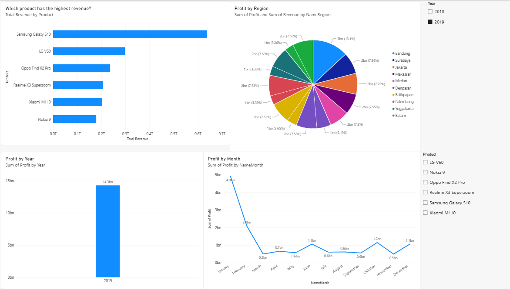
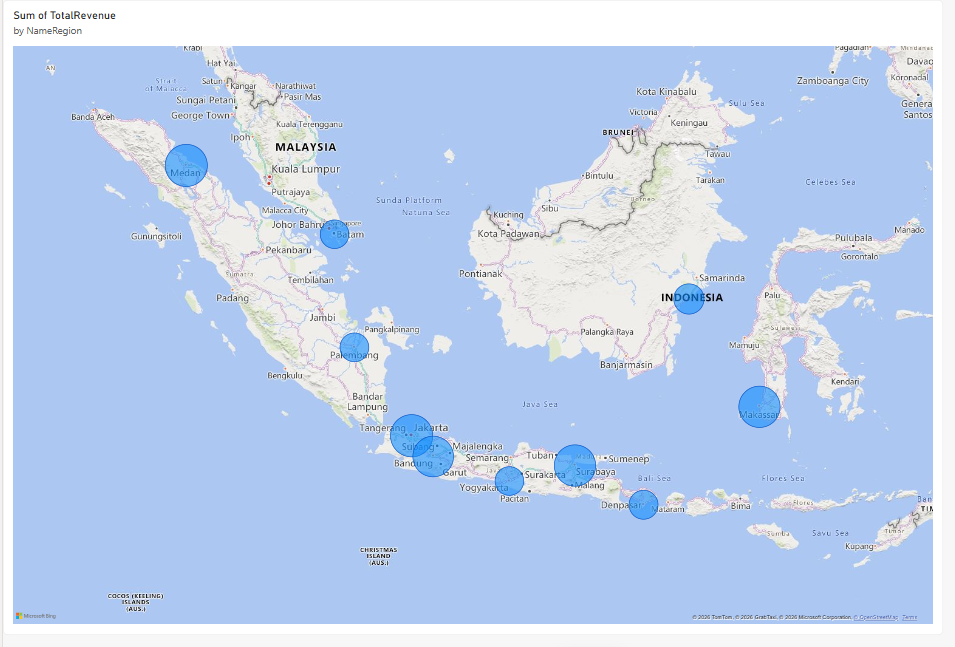
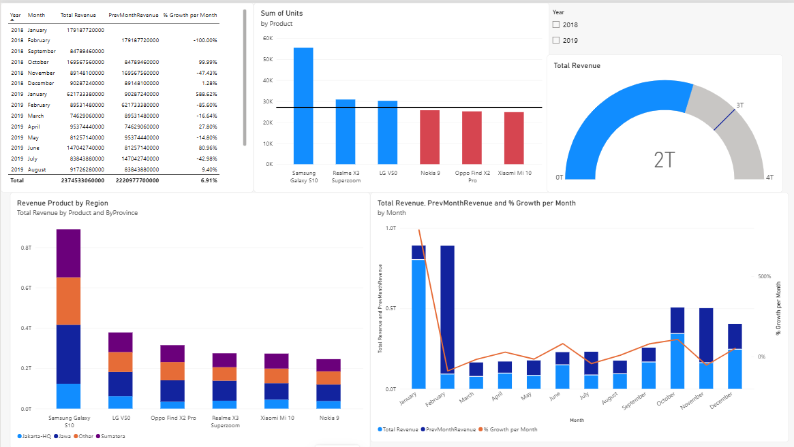

Data Analytics Project
Power BI Dashboard
Proyek pengolahan dan visualisasi data penjualan menggunakan Microsoft Power BI untuk menganalisis pendapatan, performa produk, distribusi keuntungan, serta tren penjualan melalui dashboard interaktif.
01 — PROJECT OVERVIEW
Project Overview
Proyek ini berfokus pada pengolahan data penjualan menjadi dashboard interaktif untuk membantu memahami performa bisnis. Dashboard menyajikan informasi mengenai pendapatan produk, keuntungan berdasarkan wilayah, tren pendapatan bulanan, serta distribusi penjualan di berbagai wilayah Indonesia. Pengguna juga dapat mengeksplorasi data melalui filter berdasarkan tahun dan produk.

Product Revenue & Profit Analysis

Revenue Distribution by Region

Sales Revenue Dashboard
02 — KEY FEATURES
Key Features
Product Revenue Analysis
Membandingkan total pendapatan dari setiap produk untuk mengetahui produk dengan performa penjualan tertinggi.
Regional Performance Analysis
Menampilkan persebaran pendapatan dan keuntungan berdasarkan wilayah di Indonesia.
Monthly Trend Analysis
Menyajikan tren pendapatan bulanan, perbandingan dengan bulan sebelumnya, persentase pertumbuhan, serta tren keuntungan.
Interactive Dashboard Filters
Menyediakan filter tahun dan produk untuk mempermudah eksplorasi data berdasarkan kategori yang dipilih.
03 — MY CONTRIBUTION
My Contribution
- Melakukan persiapan dan pengolahan data penjualan sebelum divisualisasikan.
- Mengembangkan visualisasi untuk menganalisis pendapatan produk dan performa wilayah.
- Membuat visualisasi tren pendapatan dan keuntungan bulanan.
- Mengimplementasikan filter interaktif untuk mempermudah eksplorasi data.
- Menyajikan informasi dan hasil analisis melalui dashboard Power BI.
04 — TOOLS USED